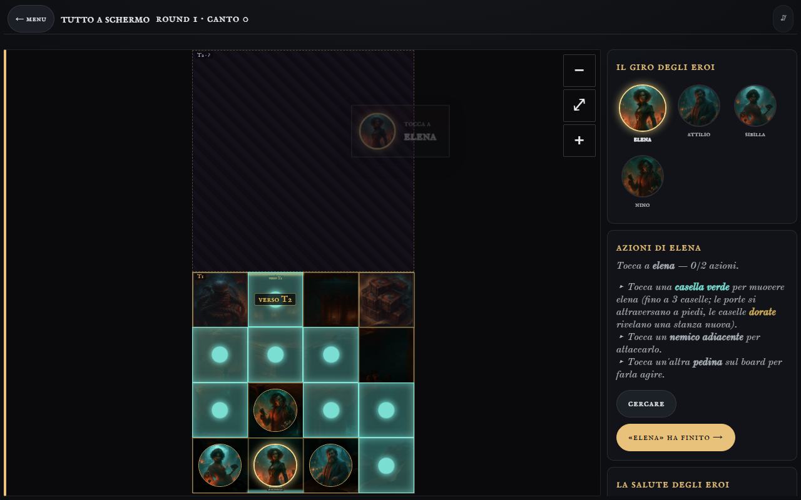

La Spedizione, tre strade
Mockup giocabili: stessa partita finta dell'Episodio 1, con arte e tessere vere. Muovete, attaccate, cercate, passate il turno: la notte reagisce davvero.

Com'è oggi
- In cima la barra vecchia («tutto a schermo»): non è il capo a card dell'Indagine, e il canto è solo una parola.
- La mappa sta in un riquadro con tanto vuoto intorno; le tessere coperte occupano metà dello spazio.
- La colonna destra scorre: la salute degli eroi è sotto la piega, proprio quella che serve per l'ansia.
- Le azioni sono un muro di istruzioni (tre righe di «▸ tocca…») e pochi bottoni.
- Quel che farà la notte si scopre solo dopo: nessun segnale prima del turno dei nemici.
AIl tabellone
Dark Quest, HeroQuest digitale, Darkest Dungeon
- La mappa è la pagina; tutto il resto galleggia ai bordi.
- In alto il capo (canto a campane) e la fila dell'iniziativa: eroi e notte nello stesso ordine.
- In basso la carta dell'eroe di turno e la barra delle azioni a icone; «Muovi» e «Attacca» accendono la mappa.
- Una riga sola di suggerimento al posto delle istruzioni.
immersione e giocabilità alte: tutto a schermo, niente scroll.
Salute degli altri eroi solo sui gettoni.
BTre colonne
Gloomhaven digitale, Mansions of Madness, Into the Breach
- A sinistra tutti gli eroi, sempre: salute, azioni, cariche. Le azioni stanno dentro la carta di chi è di turno.
- A destra la notte: il canto come una torre con le soglie, il mazzo che cala.
- Ogni nemico dice cosa farà: «→ Sibilla, −1».
ansia al massimo: la minaccia si vede arrivare.
Mappa più stretta; su telefono diventa a schede.
CLa carta in mano
Darkest Dungeon, Into the Breach, le app compagne da telefono
- Sotto il pollice la carta dell'eroe, di carta come quella del tavolo, con sei tasti grandi.
- Gli altri eroi sono ritratti con l'anello della salute: un tocco e la carta gira.
- Il canto è la nebbia rossa che stringe la mappa, più sale più chiude. Frecce della notte sulla mappa.
coinvolgimento: ognuno ha la sua carta in mano, anche dal telefono.
Su tablet la carta ruba una colonna alla mappa.
I pezzi si mescolano: il capo a campane di A è quello dell'Indagine. Provateli anche col telefono: ognuno ha la sua versione stretta.